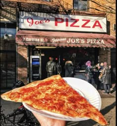

La culture est cosmopolite et plurielle : élitiste dans les opéras et théâtres mais la création artistique est populaire notamment grâce aux comédies musicales qui ont lieu à Broadway ou, tout simplement, dans la rue.
Les films les plus célèbres se déroulent à New York car la ville sert de décor à tous les genres cinématographiques.
La pizza new-yorkaise est l'un des plats les plus populaires. On la trouve dans des pizzerias à Manhattan et à Brooklyn.

Les bagels sont un incontournable du petit-déjeuner souvent garni avec du fromage frais et du saumon mais il existe plusieurs variétés.